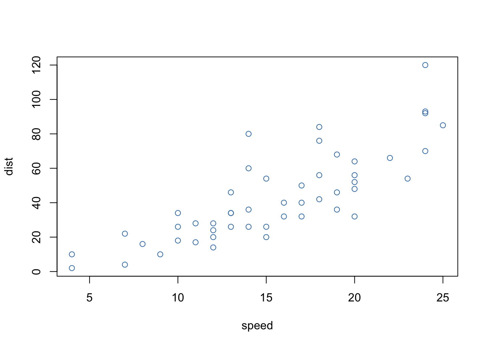

```{r}
1+1
```[1] 2
R (on the left) is a programming language, which looks at (👀) R scipt files (the box with .r) and interprets them. RStudio is an IDE (Integrated Development Environment) that provides a more pleasant interface to working with R.
Quarto (not pictured) is a program that interprets Quarto documents (the box with .qmd) and renders them as html files. We’ll be doing this all inside of RStudio.
This was an example of inserting an R code chunk into a quarto notebook
```{r}
1+1
```[1] 2This was an example of making a plot in quarto
```{r}
plot(cars)
```
This was an example of running R code from Winters (2019). This particular code prints out all of the named colors in R.
```{r}
colors()
``` [1] "white" "aliceblue" "antiquewhite"
[4] "antiquewhite1" "antiquewhite2" "antiquewhite3"
[7] "antiquewhite4" "aquamarine" "aquamarine1"
[10] "aquamarine2" "aquamarine3" "aquamarine4"
[13] "azure" "azure1" "azure2"
[16] "azure3" "azure4" "beige"
[19] "bisque" "bisque1" "bisque2"
[22] "bisque3" "bisque4" "black"
[25] "blanchedalmond" "blue" "blue1"
[28] "blue2" "blue3" "blue4"
[31] "blueviolet" "brown" "brown1"
[34] "brown2" "brown3" "brown4"
[37] "burlywood" "burlywood1" "burlywood2"
[40] "burlywood3" "burlywood4" "cadetblue"
[43] "cadetblue1" "cadetblue2" "cadetblue3"
[46] "cadetblue4" "chartreuse" "chartreuse1"
[49] "chartreuse2" "chartreuse3" "chartreuse4"
[52] "chocolate" "chocolate1" "chocolate2"
[55] "chocolate3" "chocolate4" "coral"
[58] "coral1" "coral2" "coral3"
[61] "coral4" "cornflowerblue" "cornsilk"
[64] "cornsilk1" "cornsilk2" "cornsilk3"
[67] "cornsilk4" "cyan" "cyan1"
[70] "cyan2" "cyan3" "cyan4"
[73] "darkblue" "darkcyan" "darkgoldenrod"
[76] "darkgoldenrod1" "darkgoldenrod2" "darkgoldenrod3"
[79] "darkgoldenrod4" "darkgray" "darkgreen"
[82] "darkgrey" "darkkhaki" "darkmagenta"
[85] "darkolivegreen" "darkolivegreen1" "darkolivegreen2"
[88] "darkolivegreen3" "darkolivegreen4" "darkorange"
[91] "darkorange1" "darkorange2" "darkorange3"
[94] "darkorange4" "darkorchid" "darkorchid1"
[97] "darkorchid2" "darkorchid3" "darkorchid4"
[100] "darkred" "darksalmon" "darkseagreen"
[103] "darkseagreen1" "darkseagreen2" "darkseagreen3"
[106] "darkseagreen4" "darkslateblue" "darkslategray"
[109] "darkslategray1" "darkslategray2" "darkslategray3"
[112] "darkslategray4" "darkslategrey" "darkturquoise"
[115] "darkviolet" "deeppink" "deeppink1"
[118] "deeppink2" "deeppink3" "deeppink4"
[121] "deepskyblue" "deepskyblue1" "deepskyblue2"
[124] "deepskyblue3" "deepskyblue4" "dimgray"
[127] "dimgrey" "dodgerblue" "dodgerblue1"
[130] "dodgerblue2" "dodgerblue3" "dodgerblue4"
[133] "firebrick" "firebrick1" "firebrick2"
[136] "firebrick3" "firebrick4" "floralwhite"
[139] "forestgreen" "gainsboro" "ghostwhite"
[142] "gold" "gold1" "gold2"
[145] "gold3" "gold4" "goldenrod"
[148] "goldenrod1" "goldenrod2" "goldenrod3"
[151] "goldenrod4" "gray" "gray0"
[154] "gray1" "gray2" "gray3"
[157] "gray4" "gray5" "gray6"
[160] "gray7" "gray8" "gray9"
[163] "gray10" "gray11" "gray12"
[166] "gray13" "gray14" "gray15"
[169] "gray16" "gray17" "gray18"
[172] "gray19" "gray20" "gray21"
[175] "gray22" "gray23" "gray24"
[178] "gray25" "gray26" "gray27"
[181] "gray28" "gray29" "gray30"
[184] "gray31" "gray32" "gray33"
[187] "gray34" "gray35" "gray36"
[190] "gray37" "gray38" "gray39"
[193] "gray40" "gray41" "gray42"
[196] "gray43" "gray44" "gray45"
[199] "gray46" "gray47" "gray48"
[202] "gray49" "gray50" "gray51"
[205] "gray52" "gray53" "gray54"
[208] "gray55" "gray56" "gray57"
[211] "gray58" "gray59" "gray60"
[214] "gray61" "gray62" "gray63"
[217] "gray64" "gray65" "gray66"
[220] "gray67" "gray68" "gray69"
[223] "gray70" "gray71" "gray72"
[226] "gray73" "gray74" "gray75"
[229] "gray76" "gray77" "gray78"
[232] "gray79" "gray80" "gray81"
[235] "gray82" "gray83" "gray84"
[238] "gray85" "gray86" "gray87"
[241] "gray88" "gray89" "gray90"
[244] "gray91" "gray92" "gray93"
[247] "gray94" "gray95" "gray96"
[250] "gray97" "gray98" "gray99"
[253] "gray100" "green" "green1"
[256] "green2" "green3" "green4"
[259] "greenyellow" "grey" "grey0"
[262] "grey1" "grey2" "grey3"
[265] "grey4" "grey5" "grey6"
[268] "grey7" "grey8" "grey9"
[271] "grey10" "grey11" "grey12"
[274] "grey13" "grey14" "grey15"
[277] "grey16" "grey17" "grey18"
[280] "grey19" "grey20" "grey21"
[283] "grey22" "grey23" "grey24"
[286] "grey25" "grey26" "grey27"
[289] "grey28" "grey29" "grey30"
[292] "grey31" "grey32" "grey33"
[295] "grey34" "grey35" "grey36"
[298] "grey37" "grey38" "grey39"
[301] "grey40" "grey41" "grey42"
[304] "grey43" "grey44" "grey45"
[307] "grey46" "grey47" "grey48"
[310] "grey49" "grey50" "grey51"
[313] "grey52" "grey53" "grey54"
[316] "grey55" "grey56" "grey57"
[319] "grey58" "grey59" "grey60"
[322] "grey61" "grey62" "grey63"
[325] "grey64" "grey65" "grey66"
[328] "grey67" "grey68" "grey69"
[331] "grey70" "grey71" "grey72"
[334] "grey73" "grey74" "grey75"
[337] "grey76" "grey77" "grey78"
[340] "grey79" "grey80" "grey81"
[343] "grey82" "grey83" "grey84"
[346] "grey85" "grey86" "grey87"
[349] "grey88" "grey89" "grey90"
[352] "grey91" "grey92" "grey93"
[355] "grey94" "grey95" "grey96"
[358] "grey97" "grey98" "grey99"
[361] "grey100" "honeydew" "honeydew1"
[364] "honeydew2" "honeydew3" "honeydew4"
[367] "hotpink" "hotpink1" "hotpink2"
[370] "hotpink3" "hotpink4" "indianred"
[373] "indianred1" "indianred2" "indianred3"
[376] "indianred4" "ivory" "ivory1"
[379] "ivory2" "ivory3" "ivory4"
[382] "khaki" "khaki1" "khaki2"
[385] "khaki3" "khaki4" "lavender"
[388] "lavenderblush" "lavenderblush1" "lavenderblush2"
[391] "lavenderblush3" "lavenderblush4" "lawngreen"
[394] "lemonchiffon" "lemonchiffon1" "lemonchiffon2"
[397] "lemonchiffon3" "lemonchiffon4" "lightblue"
[400] "lightblue1" "lightblue2" "lightblue3"
[403] "lightblue4" "lightcoral" "lightcyan"
[406] "lightcyan1" "lightcyan2" "lightcyan3"
[409] "lightcyan4" "lightgoldenrod" "lightgoldenrod1"
[412] "lightgoldenrod2" "lightgoldenrod3" "lightgoldenrod4"
[415] "lightgoldenrodyellow" "lightgray" "lightgreen"
[418] "lightgrey" "lightpink" "lightpink1"
[421] "lightpink2" "lightpink3" "lightpink4"
[424] "lightsalmon" "lightsalmon1" "lightsalmon2"
[427] "lightsalmon3" "lightsalmon4" "lightseagreen"
[430] "lightskyblue" "lightskyblue1" "lightskyblue2"
[433] "lightskyblue3" "lightskyblue4" "lightslateblue"
[436] "lightslategray" "lightslategrey" "lightsteelblue"
[439] "lightsteelblue1" "lightsteelblue2" "lightsteelblue3"
[442] "lightsteelblue4" "lightyellow" "lightyellow1"
[445] "lightyellow2" "lightyellow3" "lightyellow4"
[448] "limegreen" "linen" "magenta"
[451] "magenta1" "magenta2" "magenta3"
[454] "magenta4" "maroon" "maroon1"
[457] "maroon2" "maroon3" "maroon4"
[460] "mediumaquamarine" "mediumblue" "mediumorchid"
[463] "mediumorchid1" "mediumorchid2" "mediumorchid3"
[466] "mediumorchid4" "mediumpurple" "mediumpurple1"
[469] "mediumpurple2" "mediumpurple3" "mediumpurple4"
[472] "mediumseagreen" "mediumslateblue" "mediumspringgreen"
[475] "mediumturquoise" "mediumvioletred" "midnightblue"
[478] "mintcream" "mistyrose" "mistyrose1"
[481] "mistyrose2" "mistyrose3" "mistyrose4"
[484] "moccasin" "navajowhite" "navajowhite1"
[487] "navajowhite2" "navajowhite3" "navajowhite4"
[490] "navy" "navyblue" "oldlace"
[493] "olivedrab" "olivedrab1" "olivedrab2"
[496] "olivedrab3" "olivedrab4" "orange"
[499] "orange1" "orange2" "orange3"
[502] "orange4" "orangered" "orangered1"
[505] "orangered2" "orangered3" "orangered4"
[508] "orchid" "orchid1" "orchid2"
[511] "orchid3" "orchid4" "palegoldenrod"
[514] "palegreen" "palegreen1" "palegreen2"
[517] "palegreen3" "palegreen4" "paleturquoise"
[520] "paleturquoise1" "paleturquoise2" "paleturquoise3"
[523] "paleturquoise4" "palevioletred" "palevioletred1"
[526] "palevioletred2" "palevioletred3" "palevioletred4"
[529] "papayawhip" "peachpuff" "peachpuff1"
[532] "peachpuff2" "peachpuff3" "peachpuff4"
[535] "peru" "pink" "pink1"
[538] "pink2" "pink3" "pink4"
[541] "plum" "plum1" "plum2"
[544] "plum3" "plum4" "powderblue"
[547] "purple" "purple1" "purple2"
[550] "purple3" "purple4" "red"
[553] "red1" "red2" "red3"
[556] "red4" "rosybrown" "rosybrown1"
[559] "rosybrown2" "rosybrown3" "rosybrown4"
[562] "royalblue" "royalblue1" "royalblue2"
[565] "royalblue3" "royalblue4" "saddlebrown"
[568] "salmon" "salmon1" "salmon2"
[571] "salmon3" "salmon4" "sandybrown"
[574] "seagreen" "seagreen1" "seagreen2"
[577] "seagreen3" "seagreen4" "seashell"
[580] "seashell1" "seashell2" "seashell3"
[583] "seashell4" "sienna" "sienna1"
[586] "sienna2" "sienna3" "sienna4"
[589] "skyblue" "skyblue1" "skyblue2"
[592] "skyblue3" "skyblue4" "slateblue"
[595] "slateblue1" "slateblue2" "slateblue3"
[598] "slateblue4" "slategray" "slategray1"
[601] "slategray2" "slategray3" "slategray4"
[604] "slategrey" "snow" "snow1"
[607] "snow2" "snow3" "snow4"
[610] "springgreen" "springgreen1" "springgreen2"
[613] "springgreen3" "springgreen4" "steelblue"
[616] "steelblue1" "steelblue2" "steelblue3"
[619] "steelblue4" "tan" "tan1"
[622] "tan2" "tan3" "tan4"
[625] "thistle" "thistle1" "thistle2"
[628] "thistle3" "thistle4" "tomato"
[631] "tomato1" "tomato2" "tomato3"
[634] "tomato4" "turquoise" "turquoise1"
[637] "turquoise2" "turquoise3" "turquoise4"
[640] "violet" "violetred" "violetred1"
[643] "violetred2" "violetred3" "violetred4"
[646] "wheat" "wheat1" "wheat2"
[649] "wheat3" "wheat4" "whitesmoke"
[652] "yellow" "yellow1" "yellow2"
[655] "yellow3" "yellow4" "yellowgreen" This was just an illustration of using the color “steelblue” in a plot.
```{r}
plot(cars, col = "steelblue")
```